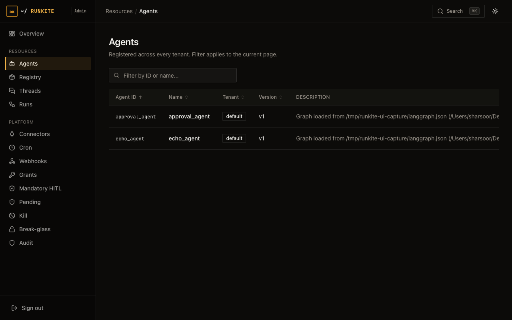

Build
Framework matrix
One control plane, several execution adapters. Compare what is installed from a registry, what requires a checkout, and what remains an unpublished helper package.
For an app that keeps its own model loop, use the separate tool-decision path. That path does not create managed Threads or Runs.
What it is
The published Python and npm runner packages execute LangGraph and LangGraph.js. CrewAI, LlamaIndex, AutoGen, and plain LangChain have in-repository adapters under python/adapters/; they are not included in the published Python package.
Why it is here
Runner Protocol shares dispatch and lifecycle machinery. Native checkpoint formats, approval resume, streaming and concurrency differ by adapter; support is not identical across frameworks.
Support matrix
| Capability | LangGraph (Py) | LangGraph.js | CrewAI | LlamaIndex | AutoGen | LangChain |
|---|---|---|---|---|---|---|
| Dispatch via plane | Yes | Yes | Yes | Yes | Yes | Yes |
| Cancel (WatchCancels) | Yes | Yes* | Yes | Yes | Yes | Yes |
| Native interrupt / resume | Yes | Yes* | Not implemented | Not implemented | Not implemented | Not implemented |
| Opaque checkpoint proxy | Yes | Yes | Yes† | Yes | Yes† | Yes† |
| Direct Postgres saver | Yes | Yes | Not supported | Not supported | Not supported | Not supported |
| True --concurrency N | Yes | Yes | Serialized per graph | Yes | Serialized per graph | Yes |
| Dependency environment | Runner venv | Node process | Isolated venv | Isolated venv | Isolated venv | Runner venv |
| E2E in CI matrix | Yes | Happy path | Happy path | Happy path | Happy path | Yes |
* TypeScript cancel/HITL verified live; matrix CI scenarios today lean on LangGraph-Python example agents.
† CrewAI / AutoGen / LangChain restore a message transcript on the plane and fold prior turns into the next invoke
(not a full framework-native memory graph). LlamaIndex restores chat_history natively. LangGraph keeps
its own saver (direct Postgres or HTTP proxy). checkpoint_ref time-travel remains LangGraph-only. Cancellation is cooperative and cannot undo completed external writes.
AI SDK and app-owned helpers
- Managed AI SDK (TypeScript, v0.5.8+): the
typescript-ai-sdkbackend uses--framework ai-sdkand a per-run factory. It creates real Threads/Runs, streams through the plane, and restores committed native history. Ships inrunkite-runnerwith optional peerai@7.0.155. - AI SDK scope: new text turns and local JSON-result tools; no native approval/resume, binary/client/provider tools, streaming tool outputs, whole-run cache or time travel. The app needs a
useChatbridge. Canceled-run spend can be incomplete. - Managed Microsoft (v0.6.0): source-built Python wheels include
python-agent-framework, the optionalagent-frameworkextra andrunkite-runner-agent-frameworkcommand. Native successful-turn sessions and CAS receipts survive worker restart. This is separate from the function middleware below. - Managed OpenAI Agents SDK (v0.6.0): source-built wheels include
python-openai-agents, the optionalopenai-agentsextra (SDKopenai-agents==0.24.0) andrunkite-runner-openai-agentscommand. Initial support is text, local function tools, native history and committed-turn recovery. Native approval/resume, handoffs, hosted/MCP tools and structured final output are unsupported. Neither new Python profile is in published PyPI0.5.8or the stock image's optional dependencies. - Managed Pydantic AI (v0.6.0): source-built wheels include
python-pydantic-ai, the optionalpydantic-aiextra pinned topydantic-ai-slim==2.63.0andrunkite-runner-pydantic-ai. The native SDK validates final structured JSON; Runkite preserves successful conversations and CAS receipts while recording only the current run's usage. Provider packages are application choices. Native deferred approvals, output functions, multimodal input and extra workflow engines are unsupported. See the installation boundary. - Managed Google ADK (v0.6.0): source-built wheels include
python-google-adk, the optionalgoogle-adk==2.13.0SDK dependency andrunkite-runner-google-adk. Initial support is one textLlmAgent, ordinary local tools, native session-local state and CAS receipt recovery. Shared app/user state, workflows, delegation, native confirmation/resume, memory/artifacts, structured output and live audio are unsupported. See the installation boundary. - App-owned helpers: TypeScript
createGovernedExecuteand optional Python MicrosoftGovernanceFunctionMiddlewareguard tool calls through the decision API. Helpers remain unpublished packages. Ordinary guarded tools work inside streamed chat; async-iterable tool outputs are unsupported. Microsoft middleware is not a managed Microsoft runner.
Read SDK integration paths before choosing a migration. The new AI SDK proof uses a real plane on SQLite/in-process and Postgres/Redis, including runner restart and crash-after-commit recovery; it is not a multi-replica HA soak.
How to implement
- LangGraph.
runkite-runner(Py) or TS runner withlanggraph.json. - Adapters, install each adapter’s deps (isolated venv for CrewAI / LI / AutoGen), then
PYTHONPATH=python:python/adaptersandpython -m crewai_adapter(etc.). - Clients keep the same Agent Protocol shape: last human message in, AI message out.
- See Agents for register/run; Checkpoints for durable state (LangGraph + adapters).
In the product

What to expect
- Scope of enforcement: dispatched runs use admission, cancellation and lifecycle controls. Connector grants and approval apply when calls pass through the connector gate; arbitrary in-process tools are not automatically governed.
- Honest limits: adapter opaque checkpoints need
RUNKITE_HTTP_URL(or the worker http address); they store message transcripts, not LangGraph channel state. Time-travelcheckpoint_refis LangGraph-only. - Dependency isolation: don’t install CrewAI into the LangGraph venv (protobuf pin fights).
Reference: docs/runners.md · Protocols